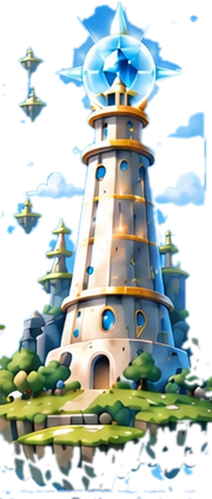
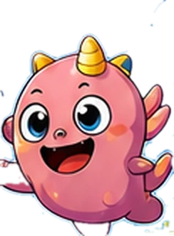
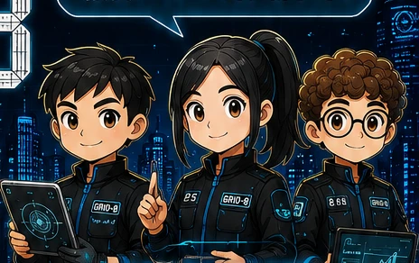
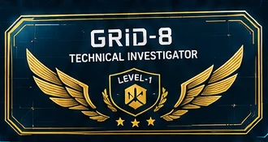

原理塔失控，8 顆原理晶核散落到 8 座浮空島。孩子化身小小原理探險員，和波波、米粒、咚咚、PICO 一起，一島一島把力量找回來。
CITY NEXT 開幕前，8 個展示區陸續出現「看似正常、結果不合理」的異常。孩子以 GRID-8 見習技術調查員身份加入，一案一案用證據破解。



在很遠很遠的天空上，有一座由許多浮空島組成的世界——「科學群島」。
這裡沒有魔法。
飛在天空中的船、自己轉動的輪子、會發光的能源塔……全部都靠一種叫「原理能量」的力量維持。
但某一天，群島中央的「原理塔」突然失控。
八種力量散落到不同島嶼：飛機飛不起來、船原地打轉、磁力車亂跑、影像消失、城市停電……
PICO：「警告！原理能量剩餘 8%！」
看起來像魔法的事情，
其實都能用科學找到原因。
這座城市即將啟動大型科技展示計畫「CITY NEXT」。
八個展示區在開幕前陸續發生異常。
這些設備多數沒有明顯損壞，但測試結果不符合預期。
一般維修，找不出原因。
這類「設備看似正常，但現象與結果不合理」的問題，只有一個單位會處理——GRID-8 城市技術調查組。
GRID-8 的規則：「不要告訴我你覺得是哪裡壞了，給我證據。」
你不是在演調查員，
你要做調查員真正會做的事。
每找回一顆晶核，原理塔就亮起一格；八顆全部回來，群島才能重新運轉。
每破解一案，展示區就重新上線；八案全數結案，系統才能如期開幕。
我看到了什麼？我覺得為什麼？我的假設、動手實驗、發生了什麼、我找到的原理。
事件、證據、假設、測試、結果、結論。案件不能只靠口頭答對，要拿出測試結果。
不是一般的結業證書，而是「我跟波波一起把八座島救回來了」的證明。
8 / 8 CASES CLOSED 之後，由林組長正式認可。
點地圖上的編號，看看每一章發生了什麼事。
填上你的名字、選一位小怪獸夥伴，領取你的探險員證！
輸入你的名字，領取 GRID-8 識別證與調查員編號。
親愛的 小探險員：
我是 PICO，原理塔的導航機器人。原理塔失控了，8 顆原理晶核飛到了 8 座島，現在原理能量只剩下 8%！
我們需要你。不是因為你已經知道所有答案，而是因為你願意先觀察、先問「為什麼」，再動手做做看。
你的夥伴 波波 已經在等你了。
每週三下午 1:30，我們在強納森美語教室集合，一起出發吧！
原理導航機器人 PICO 敬上
見習技術調查員 ＿＿＿：
CITY NEXT 開幕前，八個展示區陸續出現異常。設備看起來都沒壞，但測試結果就是不對。
你被選為最年輕的一批見習調查員。你要做的事很簡單，也很難：面對未知、提出假設、操作設備、排除可能，用數據和證據做判斷。
你的調查員編號是 GRID8-J000。第一案是資格測試，通過後取得現場調查權限。
每週三 13:30，強納森美語教室，準時報到。
GRID-8 現場主管 林組長
翻開卡片看看 PICO 的線索。答案不在卡片上——要到課堂上親手做實驗才找得到！
打開證物袋看看 N8 的初步紀錄。結論不在袋子裡——要靠你在現場測試取得。

已和夥伴一起找回 8 顆原理晶核，成功重新啟動原理塔。
已完成 CASE 01–08 全部案件調查，8 / 8 CASES CLOSED。
原理塔上方出現一張新地圖……N8 ▸ 偵測到新的案件類型……
故事不在第八堂結束——下一季還有新的地方可以去。